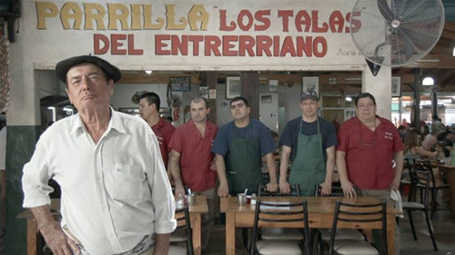

Real Chubut - Agencia de Noticias


El asado argentino ya tiene película

'Todo sobre el asado', de Gastón Duprat y Mariano Cohn, deconstruye la tradición culinaria.
La nueva película de los argentinos Mariano Cohen y Gastón Duprat no gustará a la Organización Mundial de la Salud. En Todo sobre el asado queda patente que en Argentina si algo se consume es carne de todos los colores y de todas las formas. Pero siempre en sociedad, “al calor de un fuego”, como canta uno de los personajes. El actor Carlos Alberto El Negro Álvarez, que pone voz y rostro al narrador, asegura haberse comido 1,5 toneladas de carne en 70 años de vida.
Con un estilo libre que mezcla el documental con la ficción, lo televisivo y el vídeo casero (seña de identidad de ambos), Cohn y Duprat se adentran en las cifras, los prototipos y las historias rocambolescas que encierra este “asunto de Estado” en Argentina. Una de estas historias es la del choripete, como explica Cohn: “Indagamos sobre un mito popular de que existen sitios en los cuales mientras te comes un choripán (el sándwich por excelencia en Argentina: un chorizo entre dos panes) una señorita acompaña la ingesta con una fellatio. No podíamos dejar de lado semejante locura”.
Desmontar los mitos o quitarles esa capa de incuestionables no es sencillo. Los cineastas lo han intentado de nuevo tras su éxito en la Mostra de Venecia con El ciudadano ilustre (Copa Volpi al mejor actor para Óscar Martínez). Han llegado a San Sebastián con el plato y acto social por antonomasia en Argentina como bandera. Todo sobre el asado es un filme sobre cómo es posible reírse hasta de los cimientos de la sociedad.
Los directores sorprendieron en Venecia deconstruyendo al Nobel argentino de Literatura. Ahora apuestan todo a la leyenda del asado. “Es una pasión que, como el fútbol, perfora a toda la sociedad argentina por igual. Se llama asado tanto al corte de carne, como al evento social de juntarse a comer diferentes tipos de carne y embutidos asados a las brasas”, puntualiza Cohn.
Los cineastas vieron una oportunidad de abarcar el fenómeno desde “todos los ángulos”: historia, rituales, estadísticas, procesos y rasgos negativos. El filme participa en la sección Culinary del Festival de San Sebastián, pero huye del prototipo de película culinaria. “Quisimos darle una vuelta de tuerca. Siempre suelen ser documentales aburridísimos y sin humor porque son solemnes y respetuosos con el tema que tocan. Existe un respeto desmedido por la alta cocina. En esta película no buscamos certezas”, asegura Duprat.
Personajes y realidades que chocan
Todo sobre el asado está llena de contradicciones: de los personajes, de los asadores y de la sociedad argentina. “Buscamos que el discurso y las opiniones de los personajes sacudan al espectador. Apelamos a un público activo y lúcido, capaz de elaborar y sacar sus propias conclusiones”, afirman los cineastas.
Para Cohn Haber contado con El Negro Álvarez es una decisión clave y natural: “Está al servicio de la película. Es una suerte de narrador y protagonista muy filoso y agudo. Es una autoridad a la hora de hablar de asados. De hecho él confiesa haber comido más de 3.000 asados en su vida en el off que arranca la película. El Negro remite a una época muy glamourosa del teatro de revista, de los capocómicos de vieja escuela, que son una raza en extinción. Vimos un show de él en el teatro hace años y siempre tuvimos ganas de hacer algo juntos. Tiene la voz más cálida del mundo”.
El mundo del asado llega hasta a las universidades. En el filme se puede escuchar al fundador de la Escuela Argentina de Parrilleros, Carlos Paty López. También se escuchan melodías, folclore puro. David Lerán, uno de los actores, canta una especie de oda al ritual del asado que él aprendió con su abuelo. “Nos gusta el drama de su voz”, dice Cohn. El drama y la melancolía también tienen su espacio en la desternillante obra de Duprat y Cohn.